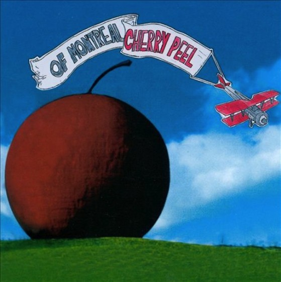

Cherry Peel (1997)
This album was the first of many of Montreal creations. Before of Montreal made a name for themselves, the band was a part of a collective called Elephant 6 with various other bands who produced their music through the support and collaboration with one another. This debut album reveals the early style of the band, more simplistic and acoustic.
Track Listing
- Everything Disappears When You Come Around - 2:33
- Baby - 2:31
- I Can't Stop Your Memory - 3:25
- When You're Loved Like You Are - 2:33
- Don't Ask Me to Explain - 2:46
- In Dreams I Dance with You - 2:05
- Sleeping in the Beetle Bug - 2:18
- Tim I Wish You Were Born a Girl - 1:46
- Montreal - 2:30
- This Feeling (Derek's Theme) - 2:42
- I Was Watching Your Eyes - 1:51
- Springtime Is the Season - 2:13
- At Night Trees Aren't Sleeping - 1:49
- You've Got a Gift - 4:50
Featured Track
Don't Ask Me to Explain
I picked to feature this song because it is my favorite from the album. I love the rawness and originality found from this first album, and I think this song serves as a good example for what the album sounds like. Barnes describes someone who is unable to understand how to love someone who is emotionally unavailable.
Lyrics
How will I ever know you enough to love you
if you're hiding who you are?
Don't ask me to explain.
Who are you hiding you from,
across the table with a penny in each eye?
Don't ask me to explain.
I'd like to marry all of my close friends,
And live in a big house together by an angry sea.
Am I the devil's marbles don't move on without me
Who will be watching my body when I sleep?
Who will I believe in?
How am I supposed to let it show when I don't even know?
Don't ask me to explain.
Besides, I don't want to be the one whose coming out first,
I'd really like to but I'm just too shy.
Don't ask me to explain.
I'd want to marry all of my close friends,
And live in a big house together by an angry sea.
Am I the devil's marbles don't move on without me
Who will be watching my body when I sleep?
Who will I believe in?
It's so easy to lie to myself
and pretend that I could love you but I can't